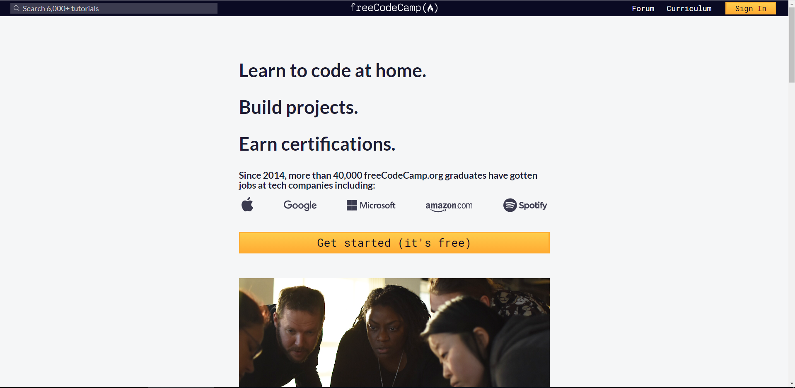
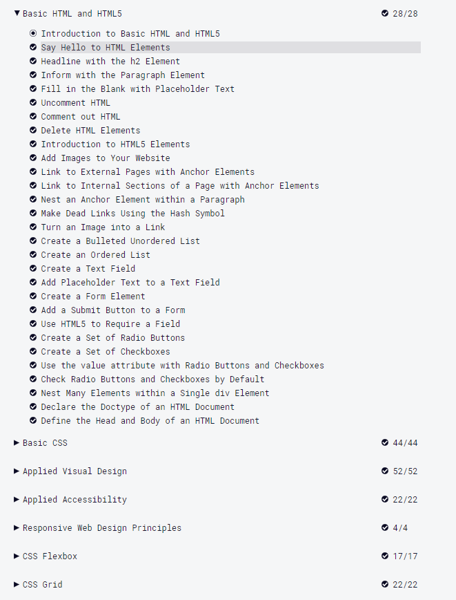
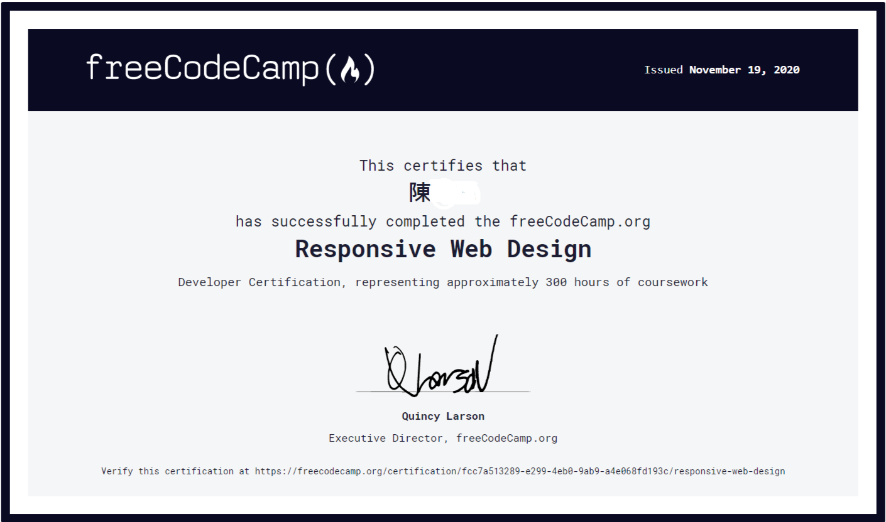
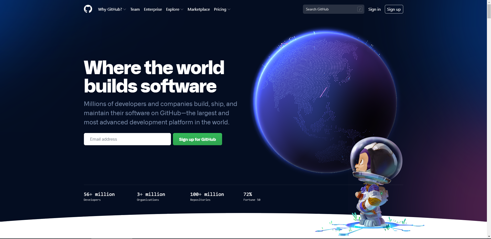
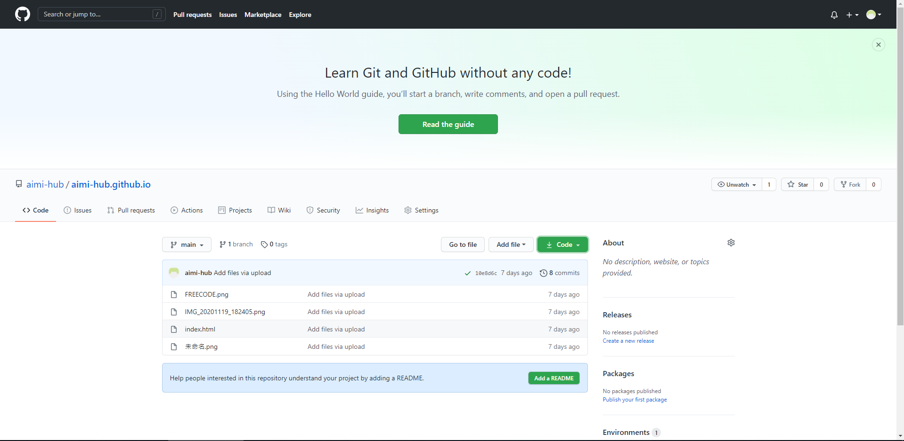

學習製作一個簡單的網站
首次嘗試
從頭開始建設網站
1.學習過程
(1)我使用freecode這個網站來學習基本網路架設
freecode網站

(2)花了五周時間成功取得證書


2.開始嘗試架設網站
(1)使用程式brackets架設網站
Brackets網站

(2)利用Github網站協助上傳網址
Github網站

(3)上傳後的樣子

3.第一次架設網站的心得
自從高一兩個學期對C++的學習後，我開始對程式有更多的興趣，所以我決定利用高二上學期的時間來嘗試學習如何架設網站，俗話說的好「萬事起頭難」，高一下學期填寫自主學習的行程單的時候都想得太美了，以為自己很行，真正要做起來的時候才發現自己真的什麼都不會，也很感謝身邊許多強大的同學，能夠給我一些提示或是哪些網站可以幫助我學習，讓我能夠踏上架設網站的起點，而不是直接放棄，在使用Freecode學習時也時常感到困惑，也很感謝與我一同學習的組員能夠和我攜手完成所有課程。但這還不是結束，當我正式要開始架設網站時，腦袋一片空白，同學有給我建議說上網找模板會比較好下手，但我覺得如果第一次就使用模板幫助製作的話，以後便會養成壞習慣，於是決定從頭都自己寫程式製作，經過和同學的一番努力後，終於能有今天的成果，雖然有學過的同學說做的很醜，但這是我自己第一次架設的網站，所以我很開心，但並不會因此自滿，我將來會更加努力的學習有關程式類的東西，精進自我的實力。
作者：aimi-hub(github)